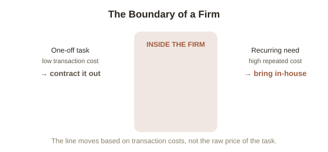

Chapter 7: Why Firms Exist at All
Every chapter so far has treated the decision-maker as a single unit making choices about resources it already has. This chapter asks a question underneath all of them: why do organizations — firms, teams, any structure where people work together under one roof — exist at all, instead of everyone simply contracting individually for every single task they need done?
Coase's question
Economist Ronald Coase asked exactly this in a 1937 paper, and the answer he gave — which won him a Nobel Prize decades later — is genuinely central to managerial economics: if markets are so good at efficiently allocating resources through prices, why doesn't a business just hire a different independent contractor for every individual task, every single time, rather than employing people on an ongoing basis? Coase's answer: because using the market itself isn't free. Every time a task is contracted out, there's a real cost to finding the right person, negotiating terms, verifying the work, and enforcing the agreement — what Coase called transaction costs (the real costs of actually using the market for a given exchange, separate from the price paid for the good or service itself).
The actual boundary of a firm
A firm exists, in Coase's framework, precisely up to the point where it's cheaper to bring a function in-house — hire someone, build an internal process — than to keep paying the transaction costs of re-negotiating that same function on the open market every time it's needed. This gives a genuinely useful, concrete answer to a question that otherwise feels vague: "should I hire someone for this, or keep contracting it out each time?" The Coasean answer is a comparison, not a gut feeling — compare the ongoing cost of employing someone (including the coordination and management overhead from Chapter 5's diseconomies of scale) against the transaction costs of repeatedly finding, vetting, negotiating with, and verifying a new contractor each time the task recurs.

Applying this personally, not just to businesses
The same logic scales down cleanly to individual decisions, including ones that don't look like "hiring" at all. Someone deciding whether to learn a new skill themselves versus repeatedly paying someone else for it is running a Coasean calculation, whether or not they'd call it that: a one-off task favors the market (find and pay a specialist once, avoiding the cost of building a skill you'll rarely use), while a frequently recurring need favors bringing the capability in-house (learning it yourself, or hiring someone ongoing), because the repeated transaction costs of going back to the market each time eventually exceed the cost of just having the capability directly.
Try this
Ideas for noticing or testing this in your own life.
- Pick one recurring task you either always outsource or always do yourself, and run the actual Coasean comparison: what are the real transaction costs of finding and managing it externally each time, against the real cost of building or maintaining the capability yourself?
Worth pulling on?
A few loose threads from this chapter — if any of these genuinely grab you, that's a good sign of where to go next.
- Every resource discussed so far has been money, staff, or effort — but the single most consistently scarce resource in any of these decisions hasn't been named directly yet: time itself. → Picked up directly in Chapter 8.